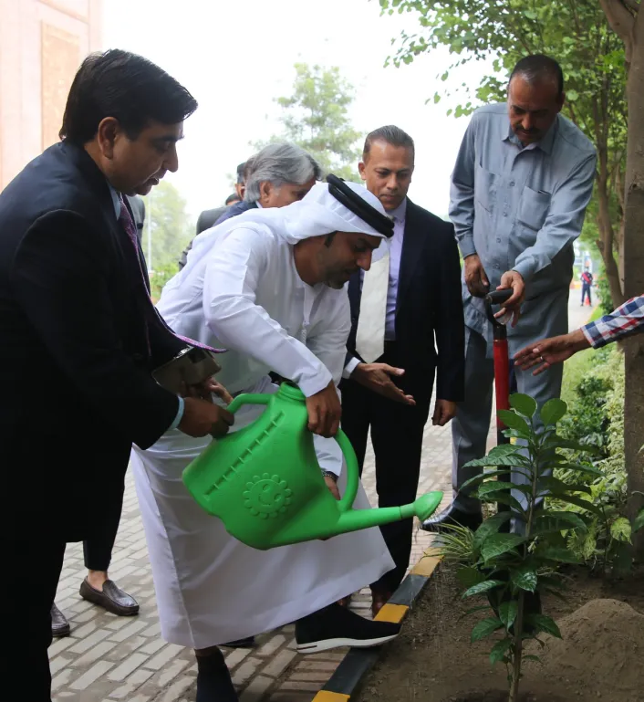
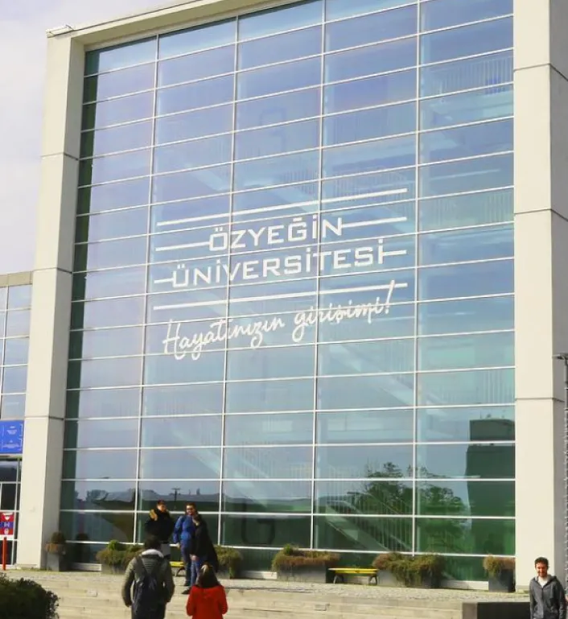

Office of Research, Innovation & Commercialization (ORIC)
Office of Research, Innovation and Commercialization (ORIC), is an initiative by HEC. ORIC aims to create a platform for students/teachers/researchers to ensure the impact of research and to sow seeds of entrepreneurship among university graduates. ORIC shall guarantee that all research programs and policies reflect the core values of academic freedom, professional integrity and ethical conduct and full compliance with all policies, legal requirements, and operational standards of the university.
- Facilitating and supporting the discovery and innovation process.
- A pivotal point to encompass all the research activities.
- Develop, expand, enhance and manage the university’s research programs.
- To link research activities directly to the educational, social, and economic priorities.
- Assure the quality of research reflects the highest international standards and advances.
Center for Climate & Environmental Research (CCER)
About Us
Pakistan, the fifth most vulnerable country to climate change according to the Global Climate Watch Risk Index 2020, has experienced significant impacts such as floods, droughts, heatwaves, locust attacks, and water scarcity. These challenges have led to a 0.53% GDP loss and economic damages of US$ 3.73 billion. The Centre for Climate and Environmental Research (CCER) at the Institute of Art and Culture is
established to enhance local climate resilience and address these issues, focusing on adaptation, mitigation, disaster risk management, and green financing in line with the Sustainable Development Goals (SDGs).
Mission Statement
CCER aims to enhance Pakistan’s capacity to understand and respond to climate change through research, knowledge networks, and collaborations while promoting the cutting-edge teaching of Sustainability Sciences and Knowledge products.
Aims And Objectives
- Implement sustainable solutions for climate issues at various levels.
- Conduct independent research and evaluate ongoing climate projects.
- Foster international partnerships for research and capacity building.
- Collaborate with public and private sectors to influence policy and promote sustainable business practices.
- Collaborate with public and private sectors to influence policy and promote sustainable business practices.
- Seek innovative funding for sustainable projects.
- Operational Structure
Key Thematic Areas
- Sustainable Urban Development.
- Energy Efficient Buildings and De-carbonization.
- Climate Change Mitigation and Adaptation.
- Climate Governance and Finance.
- Climate Change and Gender.
Research Working Groups
- WG-I: Sustainable Urban Development
- WG-II: Energy Efficient Buildings and De-carbonization.
- WG-II: Sustainable Agriculture and Integrated Water Resource Management.
- WG-III: Climate Modelling and Extreme Weather Events.
- WG-IV: Climate Governance and Finance.
- WG-V: Advocacy, Outreach, and Media.
Collaborations
- Center for Energy, Environment, and Economy (CEEE), Özyeğin University, Turkey.
- University of Austin, Texas, United States.
Center for Energy, Environment & Economy (CEEE)
CEEE Lahore is a multifaceted team of professionals with expertise in social, environmental and economic factors of construction industry which enables it to prepare comprehensive and effective sustainability strategy for Construction Projects.
CEEE Lahore (in collaboration with CEEE Turkiye) is serving Lahore Times Square Ltd. (LTS) as the Sustainability Strategy Management Consultant.
CEEE Lahore is guiding LTS to ensure the integration of sustainability principles into design, construction and operations phases the project.
The comprehensive sustainability strategy prepared by CEEE encompasses short, mid and long terms goals in the following areas:
- Regenerative Economy
- Empowering Communities
- Action for Climate
- Transformative Innovation
to ensure the sustainability of Lahore Times Square Ltd. by implementation oversight, reporting, and continuous improvement efforts.
Center for Well Being & Positive Psychology
At Center for Wellbeing and Positive Psychology, we believe in fostering personal and professional growth through a holistic approach to self-improvement. Our mission is to empower individuals to enhance their overall wellbeing, cultivate positive psychology, and excel in various aspects of life.
We offer 3 Mandatory Courses focusing on:
Self-Awareness
Uncover the layers of your true self through our comprehensive Self-Awareness course. Develop a deep understanding of your emotions, strengths, and areas for improvement. Cultivate mindfulness and self-reflection to navigate life’s challenges with resilience.
Personality Development
Embark on a transformative journey to refine and enhance your personality. Our Personality Development course focuses on honing communication skills, building confidence, and fostering a positive mindset. Discover the keys to effective interpersonal relationships and unlock your full potential.
Professional Development
Elevate your career trajectory with our Professional Development course. Acquire essential skills for success in the professional realm, including effective leadership, time management, and goal-setting. Cultivate a growth mindset and strategic thinking to thrive in today’s dynamic work environment.
Wellbeing Center Services
In addition to our mandatory courses, the Center for Wellbeing and Positive Psychology is committed to providing comprehensive mental health support. Our Wellbeing Center offers a range of services, including:
Counseling and Therapy
Trained professionals are available to provide confidential counseling and therapy sessions. Whether you’re dealing with stress, anxiety, or other mental health challenges, our team is here to support you on your journey to mental and emotional wellness.
Mindfulness and Relaxation Programs
Engage in mindfulness practices and relaxation techniques to promote inner peace and stress reduction. Our programs are designed to help you cultivate a sense of balance and tranquility in your daily life.
Workshops and Seminars
Attend workshops and seminars on various topics related to mental health, resilience, and wellbeing. These events provide valuable insights and practical tools to navigate life’s complexities with grace and positivity. At the Center for Wellbeing and Positive Psychology, we are dedicated to empowering you on your journey towards a fulfilling and flourishing life.